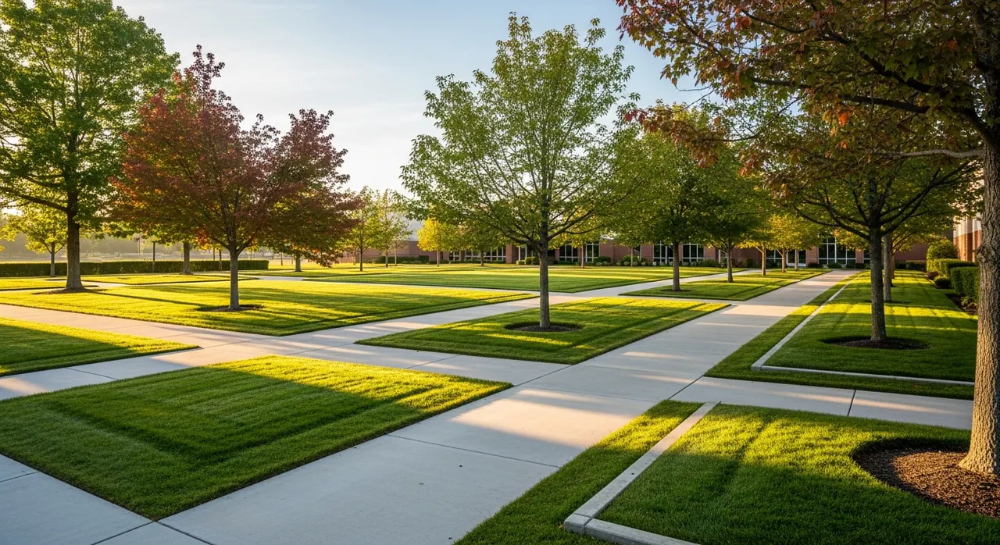
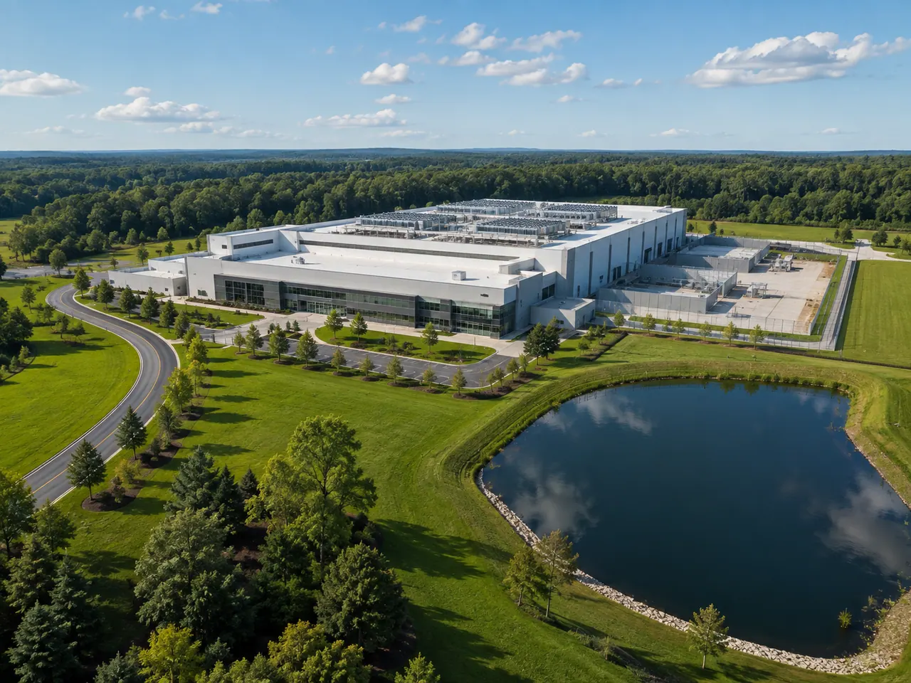

01
Grounds & Vegetation Management
Bring acreage, overgrowth and perimeter vegetation into a practical maintenance plan.
recurring grounds care
Commercial & Industrial / Exterior Site Operations
One Team to Call for Your Property's Exterior Care.
Nearly 30 years of experience in grounds care, drainage, and earthwork. We help you plan the work around deliveries, access, and daily operations, from site preparation to regular maintenance.
Serving Upstate South Carolina and greater Charlotte. We'll confirm coverage for your property when we talk.
One Team to Call
A washed-out road may need both grading and drainage. Overgrown ground may need clearing before regular mowing can begin. We look at how those jobs fit together and explain what should happen first.
We'll explain what our crew will handle and where a specialist may be needed.
One Team. A Clear Work Plan.
Clear priorities, regular updates, and a plan in writing
How We Can Help
We'll look at the whole site, talk through what needs attention now, and plan regular care alongside larger repairs.
01
Bring acreage, overgrowth and perimeter vegetation into a practical maintenance plan.
recurring grounds care02
Keep ponds, ditches, and drainage working together to move water where it needs to go.
Drainage services03
Repair washouts, restore damaged ground, and correct uneven grades.
Grading and site preparation04
Plan clearing, tree work and brush management around the areas you use and the land you want to retain.
Tree and land services05
Maintain gravel access roads and site grades around the way you use your property.
Property reconstruction06
Tell us about storm debris, washouts, or damaged ground. We'll confirm availability and the work needed. This form is not emergency dispatch.
Property repairs07
Set a regular maintenance schedule, decide what to check, and agree how we'll keep you updated.
Recurring grounds management08
Plan seasonal plowing, anti-icing and documented storm response around your site, access priorities and winter risk.
Snow and ice managementFrom the Ground Up
PHASE 01
Plan clearing, grading, and drainage around your construction schedule and project requirements.
PHASE 02
Get new grounds established, clear leftover debris, and decide what ongoing care will include.
PHASE 03
Keep a regular maintenance schedule and review new problems as they arise. Larger repairs get a separate estimate for your approval.
Data centers & complex campuses
Perimeter vegetation, ponds, trees, and service roads all affect how the grounds work. We look at them together when planning maintenance for a secure facility.
We'll confirm access, work hours, safety rules, and the records your site team needs before scheduling the crew.
Explore data center & secure facility grounds
We work with manufacturing and automotive-supplier campuses, data centers, distribution and logistics facilities, industrial parks, biopharmaceutical and corporate campuses, mixed-use developments, utility properties and managed commercial acreage.
Your agreement sets out reporting and response arrangements.
P1 Commercial Site Assessment
Tell us where it is, what you need and its current stage. A city or region is enough to start if the address is not yet confirmed.
We'll find a time to walk the property around your operating schedule and our availability. Together, we'll look at what needs attention first.
After the visit, we'll talk through what we found and recommend the next steps. You'll know what the proposed work includes before making a decision.
Before work starts, we'll confirm access, scheduling, vendor paperwork, and any specialist or technical studies needed. Security clearance, uptime, and emergency response commitments need a separate written agreement.
Start the conversation
Tell us about your property and what needs attention. We'll get in touch to talk through the work.
To protect our team from spam, please use the secure form on this page.
Review our service areasExplore More With P1
Explore more ways we can help care for your commercial property.